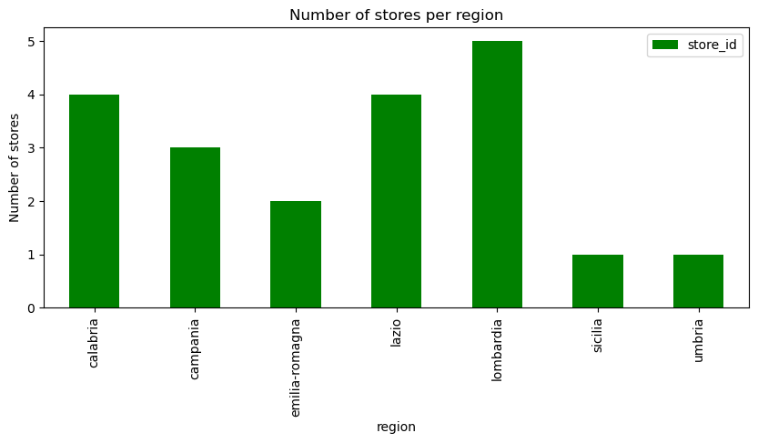

# Required libraries
import pandas as pd
import matplotlib.pyplot as plt
import seaborn as snsExplore Italian web scraped grocery dataset
dataset
Daniele Sasso and a few others made their dataset availible on Zenodo - https://doi.org/10.5281/zenodo.14927602 - daily webscraping data from different shops of an Italian supermarket chain.
Manually manually downloaded the dataset to /data/bronze/ for a quick exploration
General EDA
# Load dataset
df = pd.read_csv("../data/bronze/Variations_Food_Prices_Italian_Supermarkets_raw.csv")df.head()| date | price | product_id | store_id | region | product | COICOP5 | COICOP4 | |
|---|---|---|---|---|---|---|---|---|
| 0 | 2020-12-03 | 1.99 | 2 | 2 | calabria | arance navelina italia calibro 1.5 kg | Oranges | Fruit |
| 1 | 2020-12-03 | 2.48 | 2 | 3 | lazio | arance navelina italia calibro 1.5 kg | Oranges | Fruit |
| 2 | 2020-12-03 | 2.49 | 2 | 4 | calabria | arance navelina italia calibro 1.5 kg | Oranges | Fruit |
| 3 | 2020-12-03 | 1.99 | 2 | 5 | calabria | arance navelina italia calibro 1.5 kg | Oranges | Fruit |
| 4 | 2020-12-03 | 2.49 | 2 | 8 | lazio | arance navelina italia calibro 1.5 kg | Oranges | Fruit |
df.info()<class 'pandas.core.frame.DataFrame'>
RangeIndex: 4033211 entries, 0 to 4033210
Data columns (total 8 columns):
# Column Dtype
--- ------ -----
0 date object
1 price float64
2 product_id int64
3 store_id int64
4 region object
5 product object
6 COICOP5 object
7 COICOP4 object
dtypes: float64(1), int64(2), object(5)
memory usage: 246.2+ MBGeographic distribution of unique products by region
# Convert date column
df['date'] = pd.to_datetime(df['date']) # Format: YYYY-MM-DD
# Define category colors
category_colors = {"Fruit": "blue", "Vegetable": "green", "Meat": "red"}
geo = df.groupby(["region", "COICOP4"])["product_id"].nunique().reset_index()
pivot_geo = geo.pivot(index="region", columns="COICOP4", values="product_id").fillna(0)
pivot_geo["Total"] = pivot_geo.sum(axis=1)
pivot_geo = pivot_geo.sort_values("Total", ascending=False).drop(columns="Total")
pivot_geo = pivot_geo[["Fruit", "Meat", "Vegetable"]]
pivot_geo.plot(kind="bar", stacked=True, figsize=(10,6), color=["blue", "red", "green"])
plt.ylabel("Number of Unique Products")
plt.title("Geographic Distribution by Region and Category (Sorted)")
plt.xticks(rotation=45, ha="right")
plt.legend(title="Category")
plt.tight_layout()
plt.show()Basic analysis: average price trend over time (by COICOP4)
price_trend = df.groupby(["date", "COICOP4"])["price"].mean().reset_index()
plt.figure(figsize=(10,5))
sns.lineplot(data=price_trend, x="date", y="price", hue="COICOP4", palette=category_colors)
plt.title("Average Price Over Time by COICOP4 Category")
plt.xlabel("Date")
plt.ylabel("Average Price (€)")
plt.legend(title="Category")
plt.tight_layout()
plt.show()
Other informative information about the dataset
First, check out the number of unique products
len(df['product'].value_counts())2361Number of stores
len(df['store_id'].value_counts())20Average number of products scraped per store per day
df.groupby(["date", "store_id"])["product_id"].count().reset_index()['product_id'].mean()239.81513854203828Get some info on how many scrapes there were and how many products were captured on average per scrape
df.groupby(["date", "store_id"])["product_id"].count().reset_index()| date | store_id | product_id | |
|---|---|---|---|
| 0 | 2020-12-03 | 2 | 244 |
| 1 | 2020-12-03 | 3 | 207 |
| 2 | 2020-12-03 | 4 | 170 |
| 3 | 2020-12-03 | 5 | 152 |
| 4 | 2020-12-03 | 6 | 366 |
| ... | ... | ... | ... |
| 16813 | 2023-04-14 | 17 | 261 |
| 16814 | 2023-04-14 | 18 | 50 |
| 16815 | 2023-04-14 | 19 | 179 |
| 16816 | 2023-04-14 | 20 | 197 |
| 16817 | 2023-04-14 | 21 | 117 |
16818 rows × 3 columns
df2 = df.copy(deep=True)
df2['date'] = pd.to_datetime(df2['date'])
df2 = df2.set_index('date')
# df2.head()
df_scrapes = df2.resample('M')['product_id'].count().to_frame()
df_scrapes.head()
# df.info()C:\Users\Serge_dev\AppData\Local\Temp\ipykernel_107724\2073670758.py:5: FutureWarning: 'M' is deprecated and will be removed in a future version, please use 'ME' instead.
df_scrapes = df2.resample('M')['product_id'].count().to_frame()| product_id | |
|---|---|
| date | |
| 2020-12-31 | 141664 |
| 2021-01-31 | 155193 |
| 2021-02-28 | 144178 |
| 2021-03-31 | 163449 |
| 2021-04-30 | 166847 |
len(df_scrapes)29df_scrapes.plot(
kind='bar',
figsize=(12,4),
title="Number of unique products scraped per scrape time",
legend=False)
plt.ylabel("number of products scraped")
plt.show()